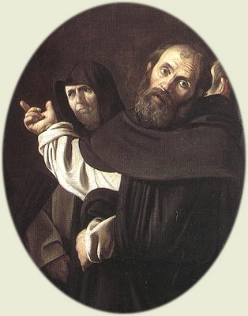

|  | |
|---|---|
| CORPUS THOMISTICUM | A BRIEF INTRODUCTION |
The Corpus Thomisticum project aims to provide scholars with a set of instruments of research on Thomas Aquinas, freely available via Internet. It has five parts:
We choose Latin as the main language of the Corpus Thomisticum, for every student of Thomas can read his original texts, which are in Latin indeed.
Corpus Thomisticum aims to be a common project: every help is appretiated. We welcome the submission or correction of bibliographical references, of improved editions of texts, and of research tools, classic or modern: bonum enim est diffusivum sui.